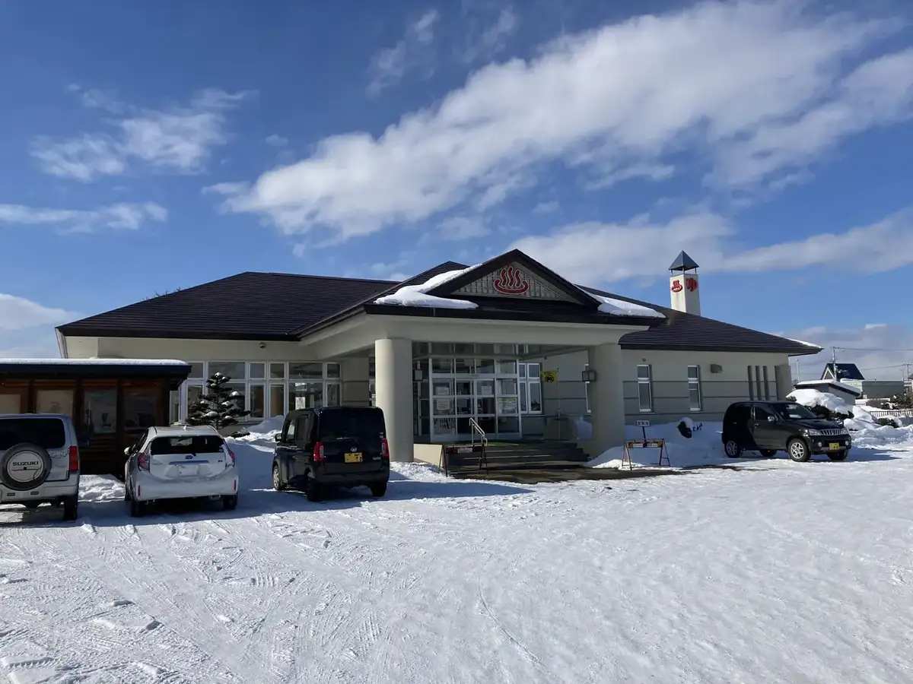
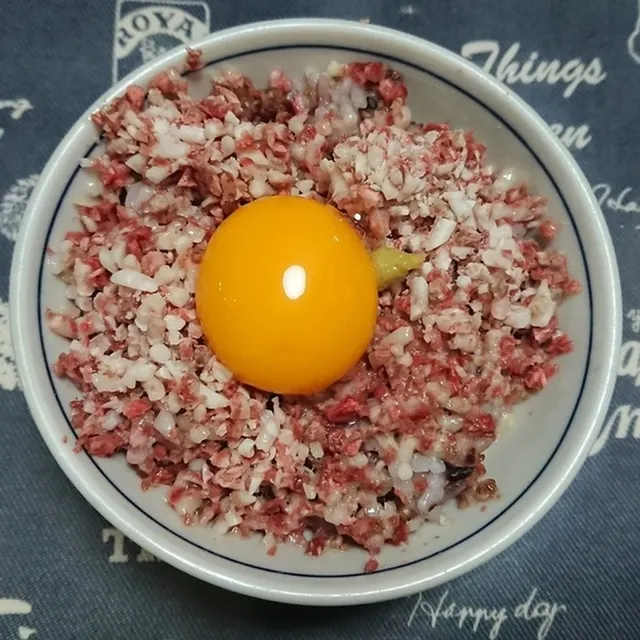
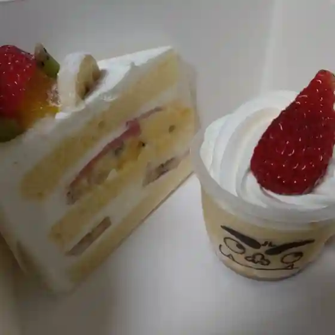
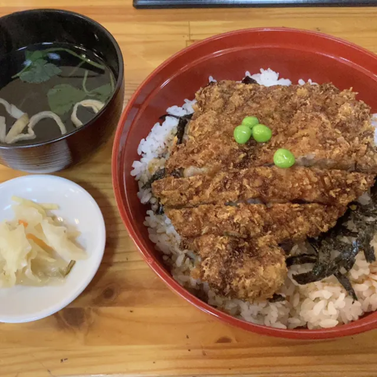
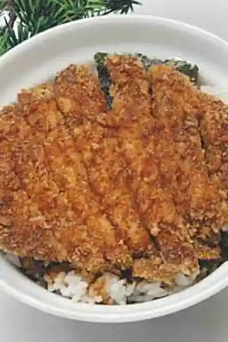
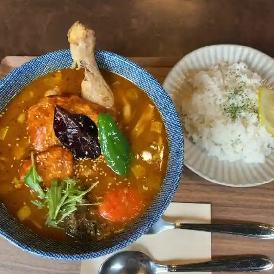
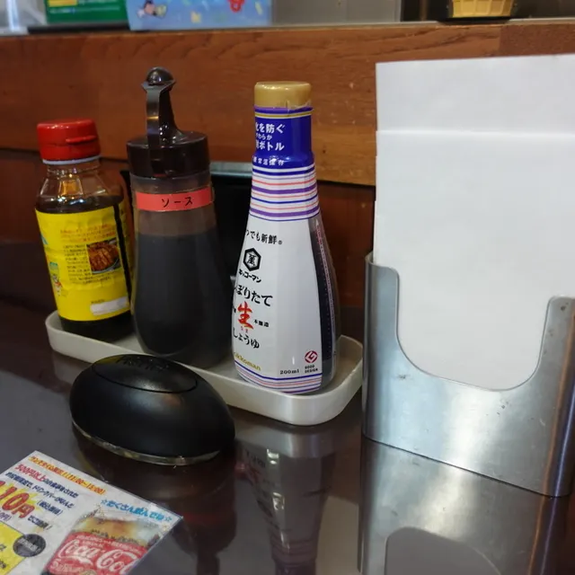

Kunneppu
Kunneppu · Hokkaido
Kunneppu
Highlighted on the Hokkaido map.

Stay
旅の宿くんねっぷ
Tabi no Yado Kunneppu
Inn in Kunneppu, Hokkaido.
Dining
西山平飼養鶏場

Nishiyama Taira Shiyou Niwatori Ba
カガミ菓子店

Kagami Kashi Mise
福よし

Fuku Yoshi
さちぱん

Sachipan
北の赤ちょうちん 扇

Kita No Aka Chouchin Ougi
めしや爽

Meshiya Sou
駅茶屋

Eki Chaya
セブンイレブン 訓子府店

Sefu N'Irefu N Kunneppu Mise
訓子府温泉保養センター
Kunneppu Onsen Hoyou Sentaa
菅野養蜂場
Kanno Youhou Ba
六三四
Roku Sanshi
Oi Cafe
Oi Cafe
居酒屋 わを
Izakaya Wawo
そば処 清水屋
Soba Tokoro Shimizuya
太田醸造
Oota Jouzou
セイコーマート 訓子府店
Seikoomaato Kunneppu Mise
旅の宿くんねっぷ
Tabi No Yado Kunneppu
炭火焼肉 だいちゃん
Sumibi Yakiniku Daichan
レストラン エルミタージュ 紀の里
Resutoran Erumitaaju Ki No Sato
シティ マート くんねっぷ店
Shitei Maato Kunneppu Mise